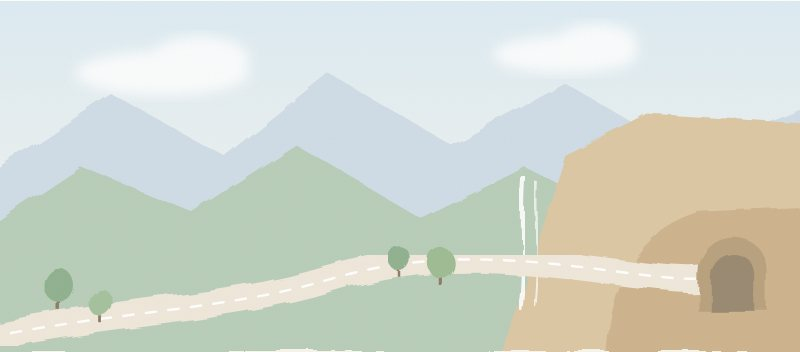
مسار زهرانThe Zahran Route
خريطة تفاعلية تُبرز أهم محطات المسار.An interactive map of the route’s key stops.
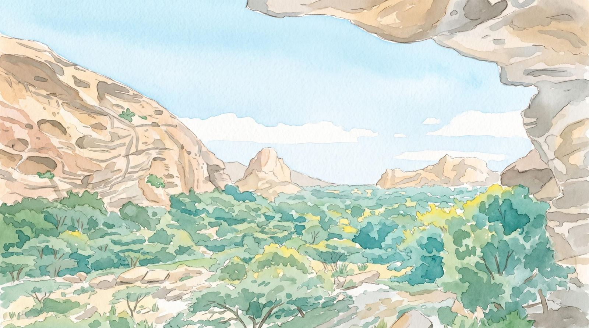
مرشد سياحي وراصد للأفلاك من الباحةA tour guide and sky observer from Al-Baha
رحلات في مساراتها، وليالٍ تحت سمائها، وخيرات من أهلها، وحكايات من دروبها.Journeys along its routes, nights under its sky, produce from its people, and stories from its roads.
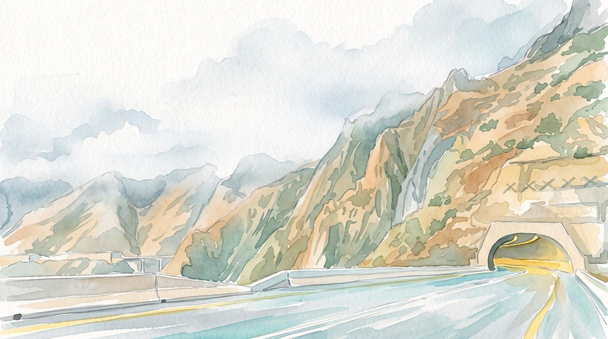
خمسة مسارات سياحية في الباحة، لكل مسار طريقه ومحطاته. تصفّح المسار وانطلق بنفسك، أو دعني أصحبك فيه.Five tourist routes in Al-Baha, each with its own road and stops. Browse a route and go on your own, or let me take you.

خريطة تفاعلية تُبرز أهم محطات المسار.An interactive map of the route’s key stops.
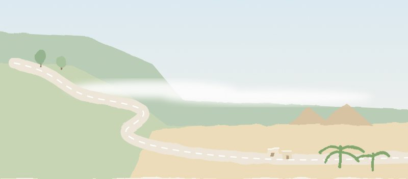
خريطة تفاعلية تُبرز أهم محطات المسار.An interactive map of the route’s key stops.
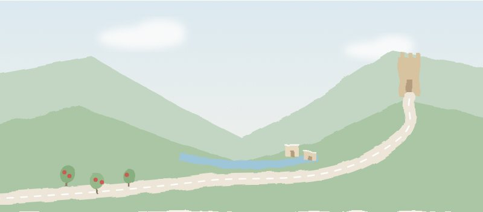
خريطة تفاعلية تُبرز أهم محطات المسار.An interactive map of the route’s key stops.
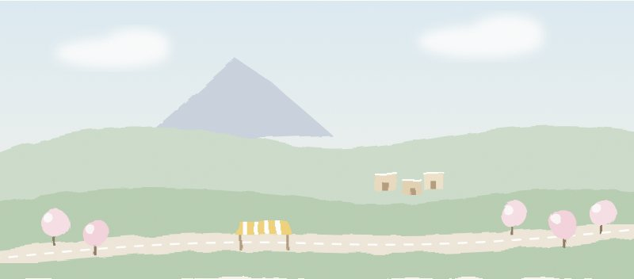
خريطة تفاعلية تُبرز أهم محطات المسار.An interactive map of the route’s key stops.
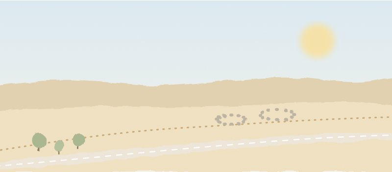
خريطة تفاعلية تُبرز أهم محطات المسار.An interactive map of the route’s key stops.
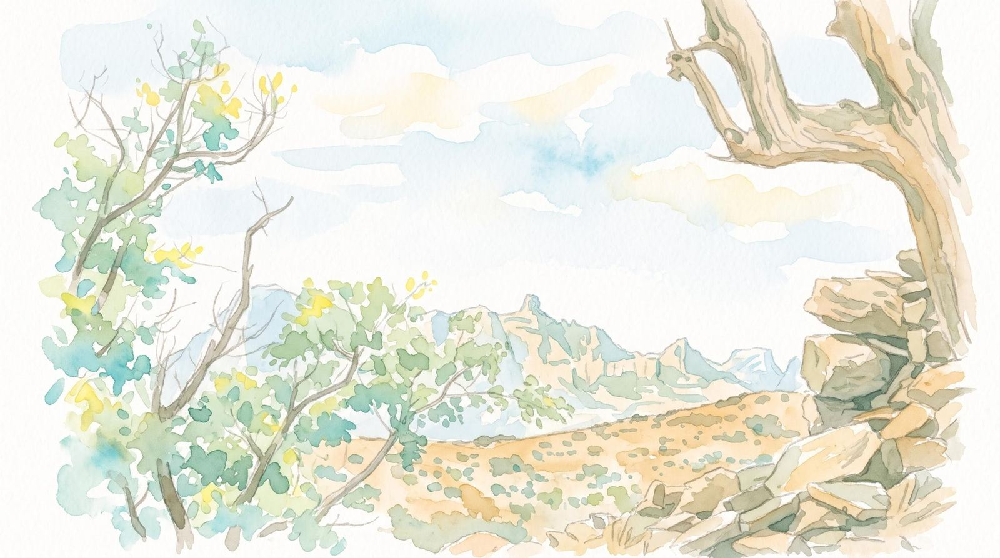
أماكن جرّبتها بنفسي في الباحة، وأوصي بها لزوّارها.Places in Al-Baha I have tried myself and recommend to visitors.
مقهى ومطعم في بلجرشي، من الأماكن التي أختارها للجلسة والقهوة.A café and restaurant in Baljurashi, one of my picks for coffee and a relaxed sit-down.
افتح في الخريطةOpen in Mapsلمن يريد أن يتذوق الأكلات الشعبية في الباحة.The place to try Al-Baha's traditional home-style dishes.
افتح في الخريطةOpen in Mapsأكواخ ريفية قريبة من مدينة الباحة، للإقامة في أجواء الجبل. تقع على مسار بيدة والتراث.Countryside cabins close to Al-Baha city, for a stay in the mountain air. It lies on the Bayda & Heritage route.
افتح في الخريطةOpen in Mapsأذكر هنا ما أوصي به فقط، وهي توصيات شخصية غير مدفوعة.I only list places I recommend. These are personal, unpaid picks.
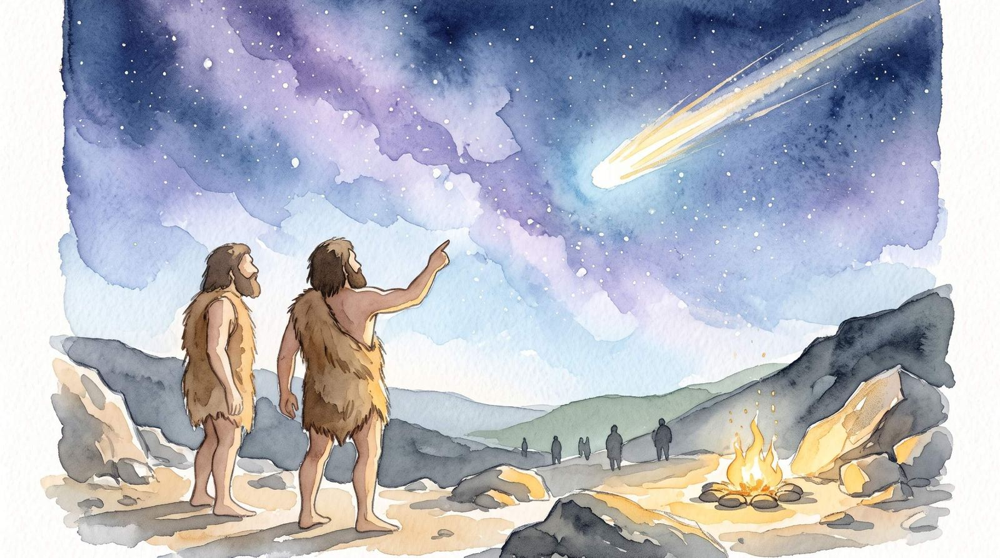
أمسية في موقع مظلم بعيد عن الأضواء، مع مرشد يعرّفك بالنجوم والكواكب.An evening at a dark-sky spot with a guide who shows you the stars and planets.
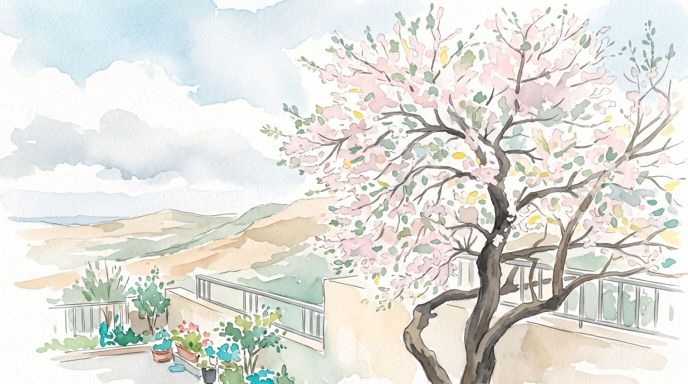
منتجات محلية مختارة من أهلها. اختر ما تريد، وأرسل طلبك عبر واتساب، ثم نتفق على الكمية والسعر والتوصيل.Local produce chosen from its makers. Pick what you like, send your order on WhatsApp, and we agree on quantity, price and delivery.
عسل، ولوز، وسمن، وأقط، وزبدة، ورمان، وبن.Honey, almonds, ghee, aqeet (dried yogurt), butter, pomegranates and coffee beans.
تصفّح المنتجاتBrowse produceخرائط مساراتي السياحية الخمسة في الباحة.Maps of my five Al-Baha tourist routes.
اعرض المساراتSee the routesخطوات عملية تساعد المتعلم على بناء عادة التعلّم بنفسه.Practical steps that help a learner build their own learning habit.
التفاصيلDetails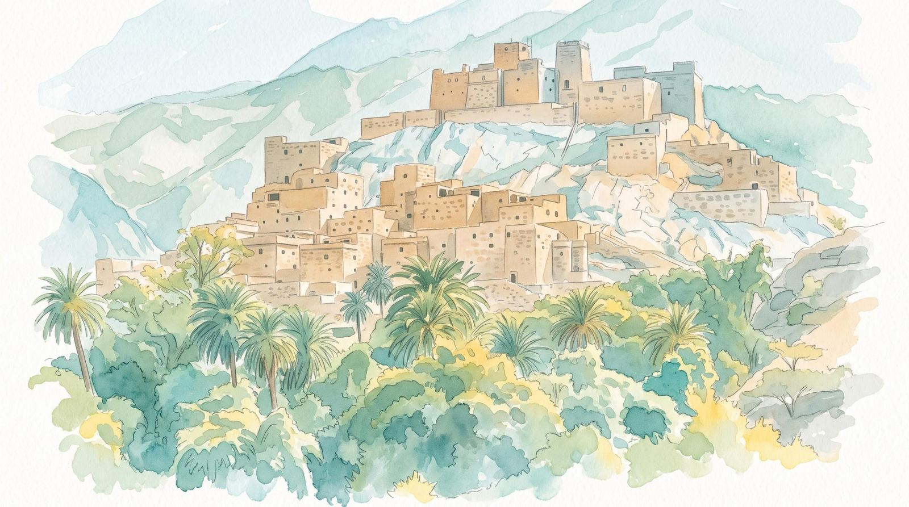
حكايات ومشاهدات من رحلاتي، بقلم أحمد بن سالم.Tales and observations from my journeys, by Ahmed Ben Salim (in Arabic).
على قمة «بيتر بوث» صخرة كأنها رأس رجل يرقب البحر، ولأهل الجزيرة معها حكاية.On the Pieter Both peak a rock looks like a man's head watching the sea, and the islanders have a tale about it.
اقرأ الحكايةRead the tale مشاهدات من سريلانكاNotes from Sri Lankaبلد يترك الطريق للفيل، ويترك البيت للشجرة.A country that leaves the road to the elephant and the house to the tree.
اقرأ المشاهدةRead the piece مشاهدات من سريلانكاNotes from Sri Lankaمهنة بأجرة ثمرة، وجوال في جيب من يصعد النخلة.A job paid in a single coconut, and a phone in the pocket of the man who climbs the palm.
اقرأ المشاهدةRead the piece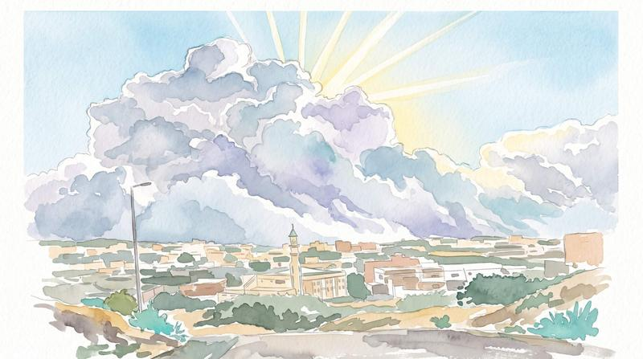
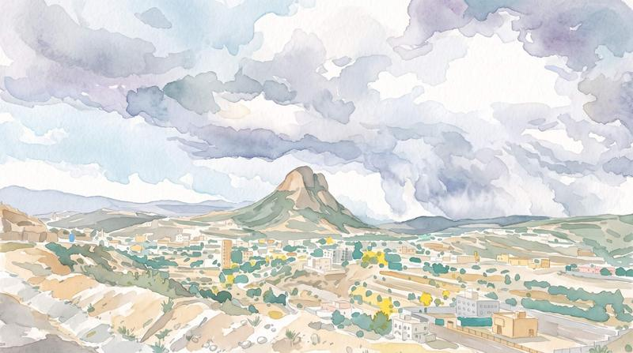
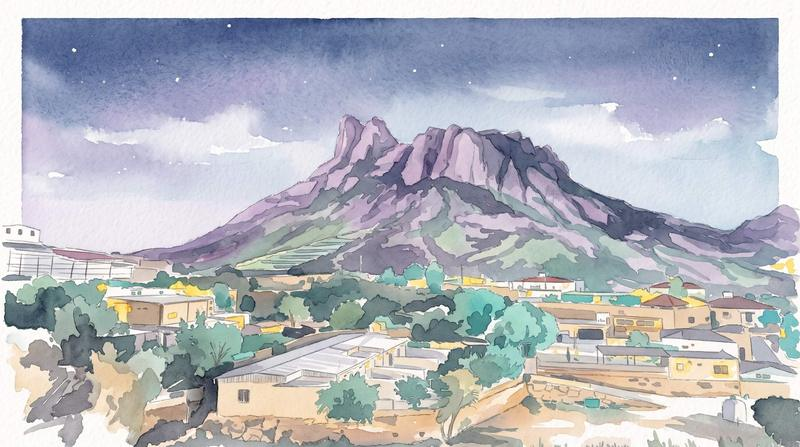
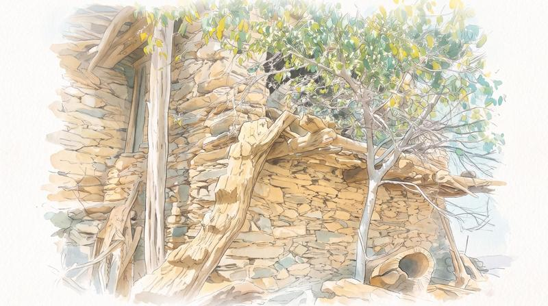
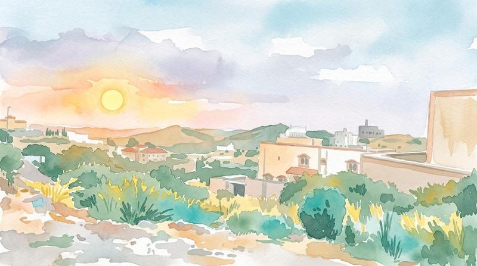
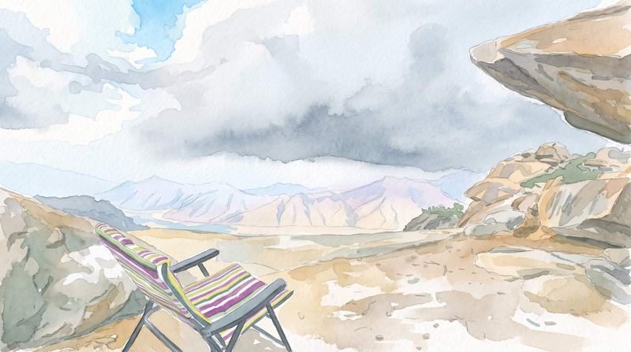
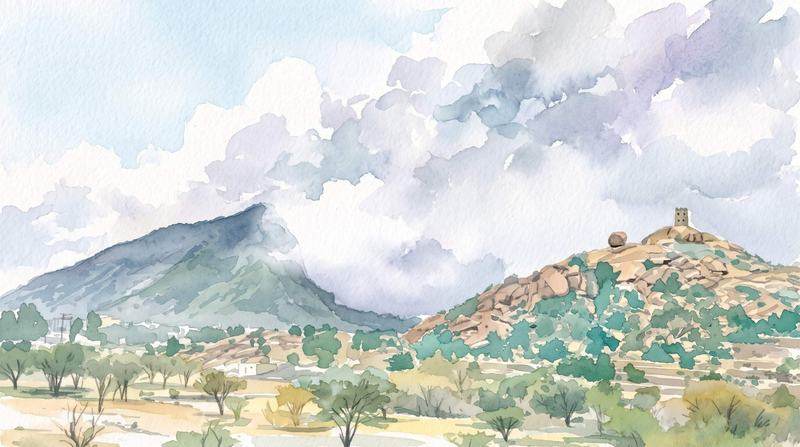
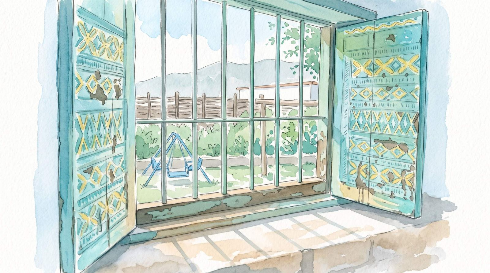
عندك نص يحتاج إلى يد كاتب؟ أخبرني عنه، وأعطيك تصوراً للعمل والسعر.Have a text that needs a writer's touch? Tell me about it, and I will outline the work and the price.
أراجع نصك وأصحح لغته وأحسّن سبكه ووضوحه، مع الحفاظ على صوتك وفكرتك.I review your text, correct its language and improve its flow and clarity, while keeping your voice and idea.
أحوّل أفكارك وملاحظاتك إلى نص أدبي متماسك، بأسلوب يليق بموضوعه وقارئه.I turn your ideas and notes into a coherent literary text, in a style that suits its subject and reader.
أصمم للمعلمين مشاريع تعليمية تقنية تناسب فصولهم ومدارسهم، بمقابل يُتفق عليه قبل البدء.I design technology-based learning projects for teachers' classes and schools, for a fee agreed before we start.
مشروع تعليمي تقني، أكيّفه لاحتياج مدرستك.A technology-based learning project, adapted to your school's needs.
مشروع لتنمية القراءة، أكيّفه لفصلك ومرحلتك.A reading-development project, adapted to your class and stage.
نادٍ تعليمي للغة الإنجليزية، يُبنى حول اهتمامات طلابك.An English club built around your students' interests.
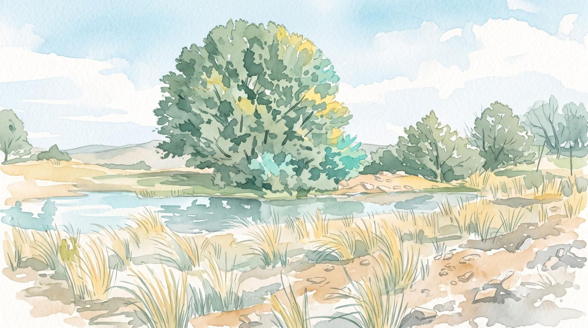
للحجز والطلبات والأسئلة، راسلني عبر واتساب، وأرد عليك في أقرب وقت.For bookings, orders and questions, message me on WhatsApp and I will reply as soon as I can.
أحمد بن سالم، معلّم لغة إنجليزية ومرشد سياحي من الباحة. قادني التعليم إلى موريشيوس وسريلانكا لأدرّب معلمي العربية على طرائق تدريس اللغة الثانية، وعلّمتني الجبال والسماء الصافية ما أحب أن أشاركه معكم: ليالي رصد للأفلاك، وأماكن ومآكل جرّبتها بنفسي ثم أوصي بها.Ahmed Ben Salim is an English teacher and tour guide from Al-Baha. Teaching took me to Mauritius and Sri Lanka to train Arabic teachers in second-language methods, and the mountains and clear skies of home taught me what I love to share: nights of sky observing, and places and meals I have tried myself before I recommend them.
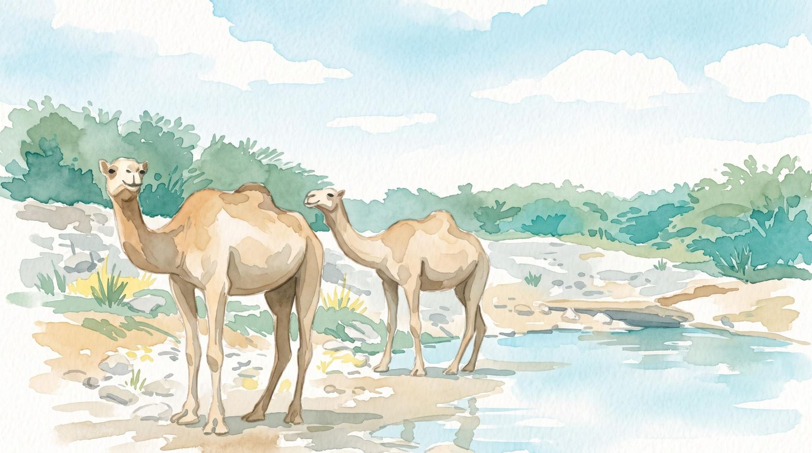
مواقع تعليمية أعددتُها، وهي تعمل باستقلال عن هذا الموقع.Learning sites I built. They run independently of this one.